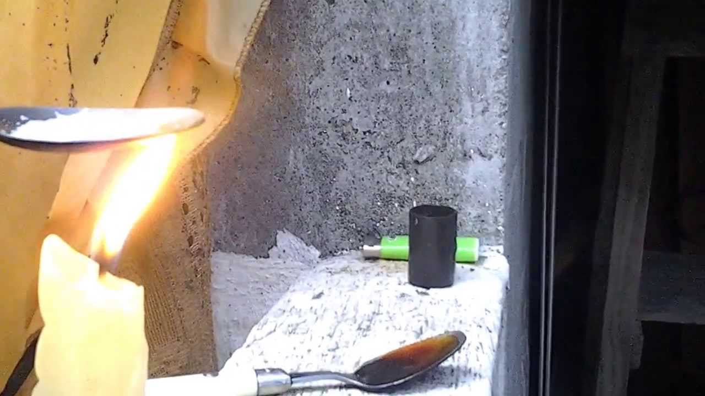

FERMENTACIÓN
La fermentación es un proceso metabólico que permite a los organismos obtener energía en ausencia de oxígeno.
Se utiliza ampliamente en la producción de alimentos y bebidas, como pan, cerveza y yogur.
EL EXPERIMENTO SE ENCUENTRA AQUÍ
Existen diferentes tipos de fermentación, como la fermentación alcohólica y la fermentación láctica, cada una con sus propias características y aplicaciones.
EXPLICACIONES
| La fermentación es un proceso biológico fundamental que permite a los organismos obtener energía en ausencia de oxígeno. | Este mecanismo no sólo es crucial para la producción de alimentos y bebidas como pan y yogur, sino que también juega un papel importante en los ecosistemas al reciclar nutrientes. | Comprender la fermentación abre la puerta a la innovación en biotecnología y agricultura y promueve prácticas más sostenibles y eficientes en la producción de recursos alimentarios. |
PRESIÓN Y REACCIÓN
La presión atmosférica es la fuerza que ejerce el aire sobre la superficie terrestre y tiene un impacto significativo en nuestra vida diaria.
EL EXPERIMENTO SE ENCUENTRA AQUÍ
Facilita la respiración al crear diferencias de presión, afecta la cocción de alimentos al influir en la temperatura de ebullición del agua y juega un papel crucial en el clima y la meteorología.
CURIOSIDADES
| La presión atmosférica es un fenómeno físico que influye en las actividades diarias y los procesos naturales, desde la respiración hasta la cocina, e ilustra la interconexión de los sistemas en nuestro entorno. | Por otro lado, la interacción entre el alcohol y el cloro en química es especialmente relevante en términos de seguridad, ya que su combinación puede ser peligrosa. | Cuando calentamos sustancias como el azúcar y la sal, observamos diferentes comportamientos: el azúcar se carameliza, cambiando su sabor y textura, mientras que la sal se disuelve en agua caliente, aumentando su solubilidad. | Estos fenómenos ilustran la importancia de la física y la química en la vida cotidiana y la necesidad de un uso seguro y responsable de los productos químicos. |

ENERGÍA CINÉTICA

La energía cinética es la energía asociada al movimiento de los objetos y depende de su masa y velocidad.
EL EXPERIMENTO SE ENCUENTRA AQUÍ
Se manifiesta en situaciones cotidianas, como al patear un balón o cuando una pelota rebota en el suelo.
MOVIMIENTOS
| La energía cinética es un concepto básico en física que describe la energía asociada con el movimiento de los objetos. | Su importancia se manifiesta en una variedad de situaciones cotidianas, desde actividades deportivas hasta procesos tecnológicos. | La fórmula que lo define, lo que demuestra que incluso pequeños cambios de velocidad pueden dar lugar a variaciones significativas de la energía cinética. | Este principio no sólo es importante para comprender el comportamiento de los objetos en movimiento, sino que también tiene aplicaciones prácticas en ingeniería y seguridad, destacando así la relevancia de la física en nuestra vida diaria. |